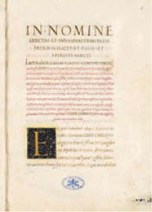
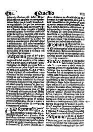
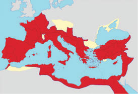
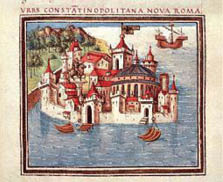

2000 Yılın En Büyük Yalanı: Sahte Bir Meşruiyetin Gayrimeşru Papaları
Birleşik Roma İmparatorluğu’nda doğan ve yayılan Hıristiyan dininin önder makamı, 8. yüzyıla kadar Konstantinopolis (Fener) Ekümenik1 Patrikliği olup bu yetkiyi Hıristiyanlığı devlet dini ve 330 yılında Nova Roma adıyla kuruluşu kutlanan İstanbul’u, Hıristiyanlık başkenti ilan eden ilk Hıristiyan Roma İmparatoru Büyük Konstantin’den alıyordu.
8. yüzyıldan öteye Hıristiyan âleminin önderliğini Papa’ya veren ve tarihe “Konstantin’in Bağışı” (Donatio Constantini) adıyla geçen yazılı belge, Roma Katolik Kilisesi’nin kurucu yasasıdır.

Konstantin’in Vasiyeti
Constitutum domni
Constantini İmperatoris
Bu yasa, Katolik Papalığı, özelinde Ekümenik Konstantinopolis Patrikliği, genelinde tüm Hıristiyan Kiliselerinin üstünde hak ve karar makamı ilan eden vasiyettir.
Roma Katolik Kilisesi yönderlerinin, 8. yüzyılda yapılandırdıkları Papalık Devletleri ve 1929’da kurulan Vatikan Devleti’nin meşruiyeti, bu tek belgeye dayanmaktadır.
Oysa vefatından sonra Konstantinopolis diye anılacak

“Konstantin’in Vasiyeti”nden söz eden Vicarius Filii Dei 666 Fetvası (Şeytan’ın
tarifi)
olan Nova Roma’da (Yeni Roma) 337 yılında ölen ve gömülen İmparator Büyük Konstantin’in; ölmeden önce “eski” Roma’daki Papa Silvestro’ya gönderdiği iddia edilen yazılı vasiyet, baştan sona sahte bir belgedir!
Büyük Konstantin öldükten dört yüzyıl sonra, 8. yüzyılda imal edilen sahte vasiyet, bu tarihi izleyen bin yıllık süreçte Roma Katolik Papalığının “evrensel önderliği”ni oturtmaya yaramış ve Ortodoks, Protestan vb. mezheplerin üstünde tüm Hıristiyan dünyasına egemen olmasını sağlamıştır.
“Konstantin’in Bağışı” belgesi, Roma İmparatoru Büyük Konstantin’in Papa Silvestro’ya gönderdiği iddia edilen sahte vasiyet olup Batı Roma Kilisesi’ne:
1. Doğu Roma Kiliselerinin üstünde hüküm ve temsiliyet yetkisini,
2. Bugünkü Vatikan sınırları içinde yer alan San Pietro (Aziz Petrus) ve San Paolo (Aziz Paulus) Kiliselerinin mülkiyetini,
3. Roma İmparatorluğu’nun eski vilayetlerindeki bazı gayrimenkulleri,
4. Bugünkü Vatikan ile Roma kentinin sınırını oluşturan Laterano Sarayı’nı,
5. Papalık ve maiyetine, imparatorluk ile senato armalarını taşıma iznini,
6. Roma, İtalya ve genelinde Batı Avrupa egemenliğini,
miras bırakıyordu.
Sahte vasiyet, İmparator Büyük Konstantin’in Doğu Roma’ya çekilme kararı ile Batı Roma’yı Papa’nın irade ve hükmüne (potestas) bağladığını açıklamasıyla bitiyordu.
Bu irade ve hüküm makamı, Papa’yı eski Batı Roma topraklarında oluşan ya da oluşacak tüm devletlerin üstüne çıkarıyor, kral ya da prens, devlet muktedirlerini Papa’nın vesayetine sokuyordu.
Roma’daki Papalığın, Hıristiyan âlemine önder ve Avrupa’ya egemen olmasını sağlayan “Konstantin’in Bağışı” belgesinin özgünlüğünden ilk kez, ortaya çıktıktan tam 300 yıl sonra kuşkulanılmaya başlandı.
Bu kadar gecikilmesinin nedeni, “Konstantin’in Vasiyeti”nin Papalık tarafından Hıristiyanlık “dogma”sı ilan edilmesi ve Ortaçağ’ını yaşayan Avrupa’da herhangi bir din dogmasına karşı çıkana engizisyon işkencesiyle ölüm cezası verilmesiydi.
Nitekim 1140 yılında belgenin sahte olduğunu ileri sürmekle kalmayıp, “şeytan eliyle yazılmış” olduğunu söyleyen Arnaldo da Brescia, 1155 yılında asıldı, cesedi yakıldı ve külleri Tiber Nehri’ne atıldı.
Bu olaydan yarım yüzyıl sonra, 1193’te Antakya Ortodoks Kilisesi patriği Theodoros Balsamon, idam edilen Arnaldo da Brescia’nın “sahtelik” tezini yeniden ele alarak Papalık makamına bir mektup gönderdi. Balsamon, mektubunda vasiyet belgesinin sahteliğini mantık uyumsuzluğuyla açıklıyordu: Roma imparatoru Büyük Konstantin, emperyal başkentini 330 yılında Marmara Boğaziçi kıyılarındaki Konstantinopolis’e taşımakla, İtalik Yarımadası’ndaki eski başkent Roma’nın ruhani ve maddi iktidarına son vermişti. Hıristiyanlık âleminin önderliğini, yetkilerini elinden aldığı Roma Patrikliğine bağışlamasının mantığı yoktu. Dolayısıyla Roma Papalığının kurucu yasasını oluşturan vasiyet belgesi, gerçek olamazdı!
1324’te Marsilio da Padova, “Konstantin’in Bağışı” belgesinin içeriğini, yine mantık metoduyla tartışmaya açtı: İmparator Büyük Konstantin, Papa’yı Hıristiyan âlemi üstünde ezelden ebede mutlak hâkimiyet yetkisiyle donatma hakkına sahipse, kendisinden sonra tahtına geçen Roma imparatorlarının (yani Konstantinopolis’teki imparatorların) da Papa’nın üstünde yetkisi vardı. Belge de Roma imparatorunun Papalık üstündeki makam yetkisinin kanıtıydı.
1327 ile 1329 arasında, İngiliz Fransisken papazı Ockhamlı William, belgenin özgün olmadığından yana kuşkusunu açıkladı.
Ve nihayet Lorenzo Valla, “Konstantin’in Bağışı” belgesini dil temelinde incelemeye başladı. Valla’nın vasiyetin sahteliğini kuşkuya yer bırakmayacak biçimde kanıtlayan bilimsel çalışması, 1440 yılında Floransa’da toplanacak dinî kurultaya sunulacaktı. Ama sunulmadı, gizlendi. Valla’nın incelemesi, ancak kendisi öldükten sonra 1506 yılında yayımlanabildi.
Papalığın kurucu yasası –tartışması yasak, çünkü– ulvi ilan edilip “Konstantin’in Bağışı” diye anılan dogmanın sahte olduğu, 1506 yılından öteye, başta Papalık, tüm ilgililerce biliniyordu. İmparatorun öldüğü 335 yılından önce yazıldığı iddia edilen vasiyetin, 700’lü yıllarda kaleme alındığı ve tümüyle uyduruk olduğu kanıtlanmıştı.
Ne var ki aradan geçen 800 yılda Papalık, sahte bir dogmaya dayandırdığı liderliğini, tüm Hıristiyan âlemine kabul ettirmişti. İtalya’yı ele geçirmiş, Roma Katolik Kilisesi’ni tüm Hıristiyan mezheplerinin üstünde söz sahibi yapmış, Papalığı da Avrupa’daki kralların, siyasal iktidarların ve halkların,
fetvalarına sıkı sıkıya bağlı olduğu kutsal önderlik makamı haline getirmişti.
Üstelik Roma’daki ruhban iktidarı, Büyük Konstantin’e atfedilen sahte vasiyeti dogma ilanıyla yetinmemiş, yeni mülk ve yetkilere ihtiyaç duydukça, bu sahte vasiyete göre eski çağlarda yazılmış da yeni bulunmuş gibi yaptığı, sahte “Papalık Fetvaları” da imal etmişti. Tabii ki kadim çağlara aitmiş de kaybolmuş ve sonradan bulunmuş gibi ortaya çıkan bu fetvalar da dogma ilan edildiler.
Günümüzde “Sahte Fetvalar” diye anılan fetvalara her “yeni bulunan eskisi” eklendiğinde Papa’nın toplumsal yaşamı düzenleyen kutsal emir egemenliği genişliyor, Papalığın topraklarına yeni bir toprak parçası ve üzerinde yaşayan bir müminler topluluğu daha katılıyordu.
Vatikan, gerek kurucu yasası “Konstantin’in Bağışı” vasiyetinin, gerekse vasiyete bağlı olarak çıkarılan “Papalık Fetvaları”nın sahte olduklarını, ancak 19. yüzyılın sonlarında, “kerhen” kabul etti. Ama o günden bugüne, iki bin yılın en müthiş sahtekârlığının üzerinde oturduğunu asla itiraf etmedi. Belgelerin sahte olduklarına ilişkin hiçbir resmî açıklama yapmadı; hatta konuyu dillendirmemeye özen gösterdi!
Hıristiyan jargonunda “İsa’nın kuzuları” diye anılan mümin tabanın sözde vicdanını yaralamamak, özde kafasını karıştırmamak için üstü örtülen sahtekârlık, tarihten günümüze sürdürülen sessiz bir anlaşmayla, Katolik Kilisesi’ne isyanla kurulmuş Protestan ve Anglikan mezheplerinin ruhban sınıflarınca da gizlendi.
Ne tuhaftır ki, kazığını yediği Katolik Kilisesi’nden nefretini gizlemeyen Ortodoks ruhban sınıfı tarafından bile açık açık ihbar edilmedi!
Papalığın tahtını elinden aldığı Konstantinopolis Ekümenik Patrikliği, Katolik Papalığa beslediği husumete, tarihte Katolik Haçlıların hazinelerini defalarca yağmalamasını, Hilal’in saldırıları karşısında Papa’ya bağlı Avrupa tarafından yalnız bırakılmasını ve daha bir sürü gerekçe gösterdi. Ancak yediği en büyük kazık, kurucusu Büyük Konstantin’in mirası, Hıristiyan âlemi önderliğinin elinden cebren ve hileyle alınmasını yutkunarak geçiştirdi!
Hâlâ da yutkunur, dillendirmez.
Çünkü herhangi bir Hıristiyan mezhebi, Kilisesi ya da ruhban sınıfının 1200 yıldır oldubittiyle yönder bellediği Papa’nın kutsal yetkilerini hükümsüz kılacak sahtekârlığı resmen kabulü, Hıristiyanlığın tüm dogmalarını tartışmaya açacak ve müminlerin kutsal metinlere olan inancını kökten sarsacaktır.
Konstantin’in “Sahte” Vasiyeti, bu anlamda da dünya ve insanlık tarihinin en şaşırtıcı “bakarkörlük” örneğidir!
Avrupa kütüphaneleri, konu hakkında sayısız belgesel yapıtla doludur; internet arama motorlarına herhangi bir dilde “Konstantin’in Vasiyeti” tamlamasını girdiğinizde, belgenin sahteliğine ilişkin yüzlerce bilimsel makale gelir önünüze. Ama bu bilgi, asla geniş kitlelere yansımamıştır, yansımaz...
Bugüne değin dünyada tek bir televizyon kanalı, BBC, sahte vasiyetle ilgili bir televizyon belgeseli yapıp yayınlamıştır: Donation of Constantin, Lies of Faithful...
BBC de bilindiği gibi, 16. yüzyılda Papa’nın kutsal hegemonyasını reddederek Anglikan mezhebini kuran Sekizinci Henry’nin ülkesi İngiltere’nin devlet televizyonudur.
Tarihsel sahtekârlığın dünya kamuoyundan saklanabilmesinde, küresel medyanın bir yanda tarihi didik didik eden belgeseller yayınlarken öte yanda adeta sessiz bir sözleşme yapmış gibi, bu olayı bilmezden ve görmezden gelişinin payı büyüktür.
Dan Brown’ın Da Vinci Şifresi gibi dine dayalı komplosu ve çoğu saçma sapan kurgulu binlerce popüler romandan hiçbirinin, Hıristiyanlık tarihindeki temel komplo, Konstantin’in sahte vasiyetinden esinlenmemiş olması da ilginçtir!
Ama açıklaması daha da ilginç olabilir:
Özelinde Avrupa, genelinde Batı diye anılan Yahudi/Hıristiyan kültür topluluğunun, tarihsel gerçeklere verdiği büyük öneme rağmen kültür temelini oluşturan sahtekârlığı mümin kitlelerden saklı tutmaya çalışması, Türklerle yakından ilişkilidir.
Batı’nın din örgütlenmesini sağlayan İmparator Konstantin’in Hıristiyan âleminin önderliğini Papa’ya bırakmadığının alenen kabul ve ilanı, Hıristiyanlığın temsil ve hüküm makamının hâlâ Konstantinopolis Ekümenik Patrikliği olduğu anlamına gelir ki; bu makam ve payitahtı artık İstanbul olup, Türklerin elindedir.
İncil’in yazılıp yayıldığı Ortadoğu’yla birlikte, İsa ve havarilerinin doğduğu Kudüs’ten sonraki en kutsal mekânı, ilk Hıristiyan başkenti Konstantinopolis/İstanbul’u da Müslümanlara kaptırmak, Hıristiyan âleminin iki büyük travmasıdır!
Kudüs’ü geri almak amacıyla yapılan Haçlı Seferleri’ni düşünürseniz, birinci travmayı anlamakla kalmaz; Hıristiyan Batı’nın İkinci Dünya Savaşı öncesi, sırası ve sonrasında bölgede bir Yahudi devleti kurulmasını niçin desteklediğini de kavrarsınız.
Batı’nın bugün siyasal anlamda artık savunulması çok zor bir İsrail’in hâlâ arkasında durmasını, salt Amerika ve Avrupa’daki Yahudi lobilerinin başarısına bağlamak, eksik bir açıklamadır. Batı’nın İsrail’e verdiği desteğin nedenleri arasında, Kudüs’ün Hıristiyanlara değilse bile İncil’de kayıtlı sahiplerine dönmesi de vardır, Hıristiyan Batı’nın Yahudilere yaptıklarından getirdiği nedametin bedeli de...
Hıristiyanlık, ilk çağlarda başlı başına yeni bir din öğretisi değil, bir Yahudi mezhebi olarak algılanıyordu. Hıristiyan âlemi, boynuzun kulağı geçtiği gibi, zaman içinde Yahudiliğin önüne geçmekle kalmadı, beslendiği kaynağa düşmanlık yaptı. “İsa’nın çarmıha gerilmesi”nden sorumlu tuttuğu Yahudiliği aşağıladı ve Yahudilere soykırım dahil, çeşit çeşit eziyet etti.
Ama akraba olduğunu hiç unutmadı ve Yahudiliğe karşı işlediği günahlardan nedamet getirdiği 20. yüzyılın ikinci yarısında, Batı kültürünü bu nedametin göstergesi olarak Yahudi/Hıristiyan ortak kökeni ilan etti. Günümüzde de İsrail’i, “İncil efsanesinin gerçeğe dönüşümü” olarak koruyup kolluyor.
Unutmayalım ki İncil, “Eski Ahit” ve “Yeni Ahit” olarak adlandırılan iki kutsal kitabın birleşimidir. Eski Ahit, İbranilerin, İsa’dan önceki kutsal metinlerinden oluşan Tevrat ve Zebur’dur. Yeni Ahit ise, eskisine eklenen 27 bölümde İsa ve sonrasını, havarilerin kutsal metinleriyle anlatır.
Hıristiyan âlemi, tarihinin ilk travmasıyla İsrail’in Kudüs’ü Müslümanlardan geri alıp Eski Ahit’te yazılı olduğu gibi sahiplenerek korumasına verdiği maddi manevi destekle başa çıktı.
Ya ikinci travmayı, ilk Hıristiyanlık başkenti Konstantinopolis’in kaybını nasıl atlattı?
Yanıtım kısa ve açık olacak: Atlatamadı.
Atlatamadığının kanıtlarını, bu kitabın ilerleyen sayfalarında bulacaksınız. Hem de mantık çıkarsamalarıyla değil, tarih belgelerinde yazılı biçimiyle!
Kitle psikolojisi, birey psikolojisinin kaba hatlarıyla yoğunlaşmış biçimidir. Bir travmayı atlatamayan insan ne yapar? Gerçeğin acıtıcı yönüyle başa çıkabilmek için anısını bilinçaltında deforme eder, daha az acıtacak bir anlam yükler ve bilinçüstünden gizler.
Hıristiyanlık âlemi de Konstantinopolis’in Müslüman Türklerin eline geçmesiyle yaşadığı travmayı, aynı yöntemle azaltmaya çalıştı: 1453’ten öteye kendi Doğu kültür mirasına, antik ve klasik çağlarına sırtını döndü, Hıristiyanlık Doğu Roma İmparatorluğu’nda doğmamış gibi yaptı. Hatta ilk Hıristiyan imparator Büyük Konstantin’i toplumsal bellekten silmeye özen gösterdi. İlk ve orta öğretim tarih kitaplarına koymayacak kadar unuttu, unutturdu.
Ama travma o denli derindi ki, unutmak yetmedi. Kaybedilen imparatorluğun adını değiştirmek gerekti. Doğu Roma’ya Roma dememek için kaybedildikten 100 yıl sonra, tam olarak 1557’de Bizans adını verdi! Böylece Müslüman Osmanlı, Doğu Roma ve ilk Hıristiyan başkentini değil, Bizans ve başkentini ele geçirmiş oluyordu.
Travma o denli yoğundu ki, kaybedilen Hıristiyan imparatorluğun bizzat Batı tarafından zayıflatıldığı, kutsal başkent Konstantinopolis’in dinsel yönderliğinin Papalık tarafından gasp edildiği ve başkente Hıristiyanlığın ilk çağlarından miras kalan kutsal kalıtların Haçlı ordularınca çalındığı
gerçeğini bilen Katolik ruhban sınıfında, kimi vicdanları da kanatıyordu.
Oysa aynı gerçekler, bazı günahkâr vicdanları da belki ilk kez, böylesine rahatlatıyordu: Batı Roma, iyi ki Konstantin’in sahte vasiyet belgesiyle Papa’yı Hıristiyanlığın yönderi kılmış, iyi ki Konstantinopolis’i yağmalayıp kutsal kalıtları Batı Roma’ya getirmişti!
Bu yalan ve talan olmasa, Ekümenik Konstantinopolis Patrikliğiyle birlikte 1453’te Hıristiyanlığın karar mercii, yetki makamı ve kutsal kalıtları Müslüman Osmanlı’nın eline geçecek, Hıristiyan Avrupa başsız kalacaktı.
İşe bakınız ki tarihin en büyük sahtekârlığı, Konstantin’in uyduruk vasiyeti, sonuç olarak dünyanın en geniş mümin kitlesine sahip Hıristiyanlığın geleceğini kurtarmış, bekasına ve kıtalararası yayılmasına yaramıştı!
Üstelik, makam üstünlüğü Papalık tarafından cebren ve hileyle gasp edilen Konstantinopolis Ekümenik Patrikliğinin, Müslüman Osmanlı’nın eline düşmesi, Hıristiyanlığın Ortaçağ’ın karanlığından kurtulup aydınlanmasını sağlamış, Rönesans’ı başlatmıştı.
Nasıl mı?
Doğu Roma’nın son bilginleri ve sanatçıları, Konstantinopolis’in Müslüman Osmanlı tarafından alınmasından sonra İtalya’ya göçtüler. Batı Roma’ya unuttuğu antik ve klasik dönem bilgilerini, sanat biçemini aktardılar. Rönesans, antik Yunan ve Roma uygarlıklarının Bizans klasik çağında yaşatıldığı biçimiyle yeniden keşfiyle başlamış olup Batı Avrupa bu keşfi, Konstantinopolis’ten İtalya’ya göçen bilginlerle sanatçılara borçludur.
Bir zaman makinasına girdiğinizi hayal edin. Dış dünyaya kapılarınızı kapatın, algınızı açın, sayfaları çevirdikçe düşeceğiniz şaşkınlıklara hazırlanın.
Çünkü tarihin seyrini 8. yüzyıldan öteye değiştiren sahtekârlığın, “Konstantin’in Bağışı”nın yıl be yıl izini sürmek, jeopolitik bir gerilim romanı, bir polisiye kadar heyecanlı!
Belgesel polisiyemiz, 8. yüzyılda, kanlı bir iktidar çekişmesinin tam ortasında başlıyor.
Ama adım adım izleyeceğimiz sahtekârlığın, dünya tarihinin akışını değiştiren işlevini kavramak için, önce tahrif ettiği gerçeği, gasp ettiği kutsal önderliğin tarihçesini özetlemekte yarar var.
Hıristiyanlığı ikiye bölmekle, aslında Doğu ile Batı uygarlığının kesin çizgilerle ayrılıp yeryüzündeki her kutupta birbirine düşman olmasına yol açan sahte vasiyetin atfedildiği Büyük Konstantin kimdi? Niçin, bir vasiyetiyle dünya jeopolitiğini değiştirecek kadar önemliydi? Neler yaptı ki böyle bir önem kazandı?
Türkiye’deki orta eğitimde, İstanbul’un 1453 öncesi tarihi zaten çok yüzeysel okutulur, Fatih’in fethinden öncesi “Bizans Dönemi” olarak geçiştirilir. Ama bu savruklukta, kuşkusuz Batı eğitim sisteminin İstanbul’un Romalı tarihini ve Hıristiyan âlemindeki liderlik konumunu karartma iradesinin de payı vardır. Sonuç olarak dünyada ve Türkiye’de çok az insan, bu kentin Büyük Konstantin tarafından kurulduğunu bilirken, onlar da sözünü ettikleri Roma imparatorunu tanımazlar.
Bu kitabı yazabilmek için çok sayıda belgesel yapıt okuduğumu tahmin edersiniz. İşte hemen hepsi Büyük Konstantin’le başlayan bu belgeseller arasında, İstanbul’un kurucusu Roma İmparatoru’nu en iyi kıyaslamayla tarif eden tarihçi, Victoria Kraliyet Madalyası sahibi ve Norwich Vikontu, İngiliz yazar John Julius Norwich’tir.
Norwich, Bizans adlı kitabının ilk sayfasında Büyük Konstantin’i şöyle tanıtır:
“Aldığı kararlar ve sonuçları, İsa, Buddha ve Muhammed dışında, kendisini tarihin en etkili şahsiyeti kılar.”
Sahte Papalık tarihini geriye sarmak ve olanları anlamak için, İsa’dan 300 yıl sonrasına hükmeden ilk Hıristiyan imparator, Yüce Sezar Konstantin’e yakından bakmak gerekiyor.

330 yılında Roma İmparatorluğu
(Büyük Konstantin)

Nova Roma
Bizim (Batı) uygarlığımız, Doğu Roma İmparatorluğu’na olan borcunu asla tanımadı. Oysa Hıristiyanlığın bu büyük Doğu kalesi olmasa, Avrupa’nın Yedinci Yüzyıl’da Pers Krallığı ya da Sekizinci Yüzyıl’da Bağdad halifesinin ordularına karşı durabilme şansı mı vardı? Doğu kalesi olmasa, bugün hangi dili konuşur, hangi tanrıya tapardık?
Doğu İmparatorluğu’na kültür borcumuz da büyük. Barbar istilalarından ve Roma’nın çöküşünden sonra Batı Avrupa’daki bilgi ışıkları, manastırlarda zaman zaman parlayan kıvılcımlar dışında tamamen söndü. Ama Boğaziçi kıyılarında parlamaya devam ettiler ve klasik mirasımızı koruyup gözettiler. Antik Çağ’a ilişkin ne biliyorsak, çoğunu Konstantinopolis’in bilgin, yazman ve çoğaltıcılarına borçluyuz. Eğer onlar olmasaydı, özellikle Yunan ve Roma edebiyatı ile Roma Hukuku ebediyen kaybolup unutulacaktı.2
John Julius Norwich